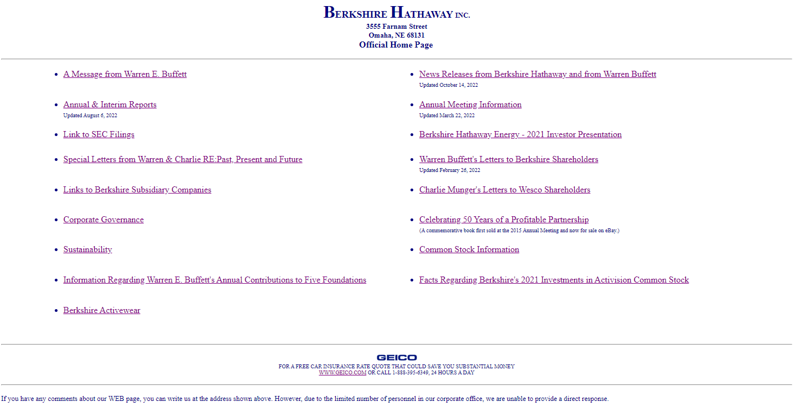

I decided to redesign the Berkshire Hathaway Homepage. As seen below, the Berkshire Hathaway homepage consists of many links with no overarching structure, with no graphical elements on the page. The page is also not responsive, and is not optimized for mobile devices.
If you just want to see the finished product, click here
Despite the website's simple text-first structure, the website has several failings for visually-impaired users. Primarily, website text is often very small, leading to difficulty reading the text for those with poor eyesight, and users with scren readers will need to painfully iterate through every single link on the site, since there is no structure.
I began by creating a lo-fi prototype of the website, using a simple wireframe to create a basic structure for the website. The original website was very simple, allowing for a high degree of memorability. I wanted to keep this aspect of the website, and as a result all links are still accessible from the top-level of the site, with no submenus. I also wanted to improve on the user experience for new users, and as a result I added an 'About Us' section, as well as some visual elements.
For tablets and smaller rectangular screens, the space between the categories and edge of the screen can be shrunk
For mobile devices, the categories are stacked vertically, with the 'About Us' and 'Contact Us' sections behind a hamburger menu
Transitioning to Hi-Fi design, I had to choose a color scheme for the website. I chose a design that was primarily white, to keep the simple and clean look of the website, but added some greys and blues to make the website appear more trustworty, complete, and blend in with the blue-highlighted links.
Like the Lo-Fi, tablets and smaller rectangular screens can shrink the space between the categories and edge of the screen
The finished product is a simple, clean, and easy-to-use website. The website is responsive, and can be used on any device. The website is also easy to learn, as the user can easily discover the structure of the website, and can easily find the links they need. The website is also easy to memorize, as the user can easily remember the location of the links they use regularly.